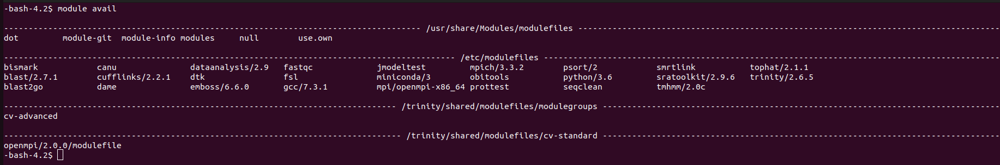

Basic commands
Modules
Some programs are only available through modules: you need to load modules to use them. As an example, if you want to compile MPI programs with mpic++, you’ll have to load the correct module:
module load mpi/openmpi-x86_64As always,
man modulewill give you all possible options/commands. Here are the most important.
module availlists all available modules.
module listlists all loaded modules.
module load X
module unload Xloads and unloads modules.
module purgeunloads all modules.
Don’t forget to load the appropriate modules inside submission scripts (see Writing a submission script). These inside-script module loads are usually preceded by module purge.
Listing partitions and nodes
sinfoThe STATE column gives the states of the nodes given in the NODELIST column and may take (among others) the following values:
- idle: no resource allocated,
- mix: some resources allocated, but no resource fully allocated,
- alloc: at least one resource (number of CPUs or memory) fully allocated,
- drain: will finish the jobs currently running but will not accept any more jobs,
- down: node is shutdown.

All the possible states and a thousand options can be listed with:
man sinfoAlso, the following command will display the characteristics of each node:
sinfo --long --NodeThe option -p allows restricting to the nodes of a single partition. The important columns of the output are CPUS, which gives the maximum number of CPUs that can be allocated, and Memory, which gives the maximum available memory in Megabytes.
Listing submitted jobs
squeueIf you want to see only yours:
squeue -u `whoami`The ST column is for the state of the job. You’ll usually see either R for running or PD for pending.
Partitions, nodes and jobs in a GUI
If X is activated (see section Running a GUI), one can also run:
sview&Running tasks
There are two ways to run tasks on nodes: submit a job (section Submitting a job) or start an interactive session (section Running an interactive session). Interactive sessions should only be used in two cases:
- you want to run a GUI,
- you want to debug your program.
In all other cases, it is better to submit a job script. The reason is that you need to allocate resources when starting an interactive session. By nature, there is usually downtime in interactive sessions (modifying scripts/programs, or not realising that the task has completed and letting it idle), and during this downtime, the resources you allocated and are currently not using are also unavailable to the other cluster users.
If you struggle with the script, send an email to yann.jullian@univ-tours.fr and use an interactive session in the meantime.
Running an interactive session
You can only ssh directly onto a node if you have one job active on it. However, a similar result can be obtained by running:
srun --partition=ibrain --ntasks=1 --cpus-per-task=12 --mem=12G --pty /bin/bash -lThe options you can give there are mostly the same as the sbatch option (see Writing a submission script), and they specify resource allocation. The --pty /bin/bash -l part tells slurm to open a console. From there, you can execute the programs you want.
As long as the console is open (type exit to leave), the resources will be allocated.
As this is a long command, you may want to use an alias. Open your ~/.bashrc and add a line:
alias interactive='srun --partition=ibrain --ntasks=1 --cpus-per-task=1 --mem=1G --pty /bin/bash -l'After relogging or running
source ~/.bashrcyou’ll be able to simply type interactive to start an interactive session.
Running a GUI
If you connect with NX
Nothing more to do.
If you connect with SSH
Linux / mac
Either give the -X option to the ssh command:
ssh -X esmeraldaor add ForwardX11 yes in your ~/.ssh/config :
Host esmeralda
Hostname 10.195.17.215
User LOGIN
ForwardX11 yes
IdentityFile ~/.ssh/esmeraldaMac
Install Xquartz.
Windows
Nothing more to do.
In all cases
Give the --x11 option to srun.
srun --x11 --partition=biopatic --nodelist=biopatic-node01 --ntasks=1 --pty rstudioOr in two steps:
srun --x11 --partition=biopatic --nodelist=biopatic-node01 --ntasks=1 --pty /bin/bash -lthen
rstudioSubmitting a job
Write a submission script launch.job (see Writing a submission script), then run:
sbatch launch.jobStopping a job
Get the ID number N of the job with the squeue command (JOBID column), then run:
scancel N